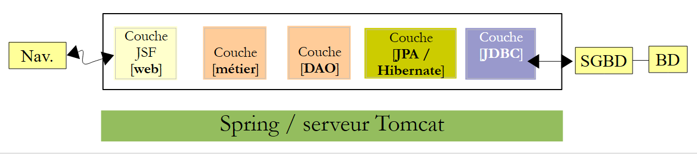
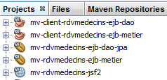
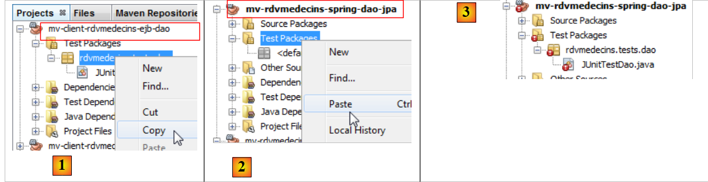
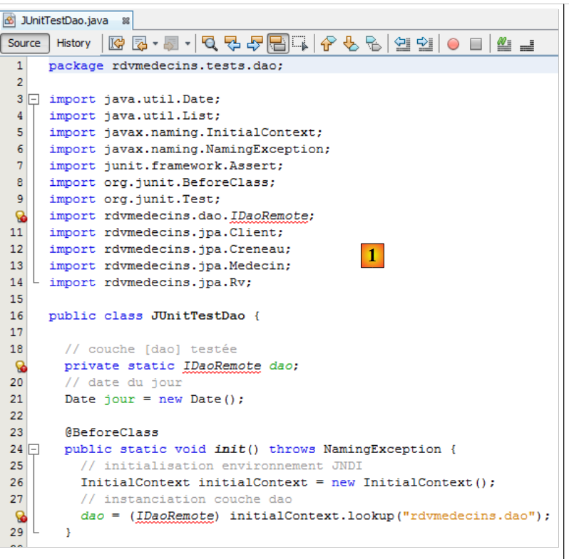
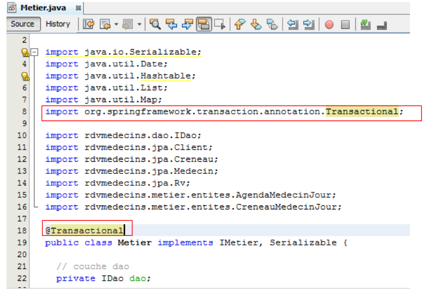
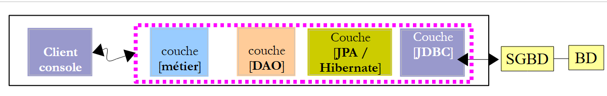
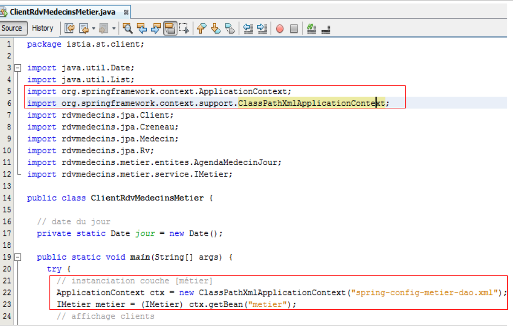
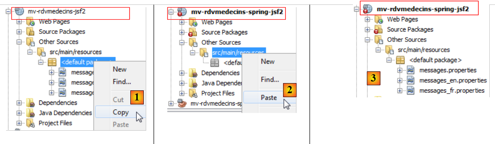
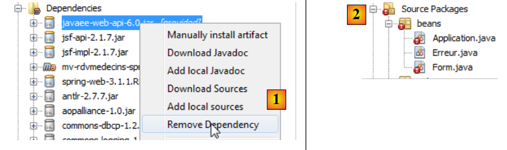

4. تطبيق نموذجي – 02: rdvmedecins-jsf2-spring
سنقوم الآن بنقل التطبيق السابق إلى بيئة Spring/Tomcat:
 |
هذا هو بالفعل عملية تكييف. سنبدأ بالتطبيق السابق ونقوم بتكييفه مع البيئة الجديدة. وسنكتفي بالتعليق على التغييرات فقط. وهناك ثلاثة تغييرات رئيسية:
- لم يعد الخادم هو GlassFish بل أصبح Tomcat، وهو خادم خفيف الوزن لا يحتوي على حاوية EJB،
- ولاستبدال EJBs، سنستخدم Spring، المنافس الرئيسي لـ EJB [http://www.springsource.com/]،
- سيكون تطبيق JPA المستخدم هو Hibernate بدلاً من EclipseLink.
نظرًا لأننا سنقوم بالكثير من عمليات النسخ واللصق بين المشاريع القديمة والجديدة، سنبقي المشاريع السابقة مفتوحة في NetBeans:
 |
يتطلب استخدام إطار عمل Spring معرفة معينة، يمكن العثور عليها في [المرجع 7] (انظر الصفحة 166).
4.1. طبقات [DAO] و[JPA]
 |
4.1.1. مشروع NetBeans
نحن نقوم بإنشاء مشروع Maven من نوع [تطبيق Java]:
 |  |  |
 |
- في [1]، المشروع الذي تم إنشاؤه،
- في [2]، نفس المشروع مع إزالة [حزم المصدر] و[حزم الاختبار]، إلى جانب التبعية [junit-3.8.1].
أصعب جزء في مشاريع Maven هو العثور على التبعيات الصحيحة. بالنسبة لمشروع Spring / JPA / Hibernate هذا، فهي كما يلي:
<project xmlns="http://maven.apache.org/POM/4.0.0" xmlns:xsi="http://www.w3.org/2001/XMLSchema-instance"
xsi:schemaLocation="http://maven.apache.org/POM/4.0.0 http://maven.apache.org/xsd/maven-4.0.0.xsd">
<modelVersion>4.0.0</modelVersion>
<groupId>istia.st</groupId>
<artifactId>mv-rdvmedecins-spring-dao-jpa</artifactId>
<version>1.0-SNAPSHOT</version>
<packaging>jar</packaging>
<name>mv-rdvmedecins-spring-dao-jpa</name>
<url>http://maven.apache.org</url>
<properties>
<project.build.sourceEncoding>UTF-8</project.build.sourceEncoding>
</properties>
<dependencies>
<dependency>
<groupId>org.hibernate</groupId>
<artifactId>hibernate-entitymanager</artifactId>
<version>4.1.2</version>
<type>jar</type>
</dependency>
<dependency>
<groupId>org.hibernate.java-persistence</groupId>
<artifactId>jpa-api</artifactId>
<version>2.0.Beta-20090815</version>
<type>jar</type>
</dependency>
<dependency>
<groupId>mysql</groupId>
<artifactId>mysql-connector-java</artifactId>
<version>5.1.6</version>
</dependency>
<dependency>
<groupId>junit</groupId>
<artifactId>junit</artifactId>
<version>4.10</version>
<scope>test</scope>
<type>jar</type>
</dependency>
<dependency>
<groupId>commons-dbcp</groupId>
<artifactId>commons-dbcp</artifactId>
<version>1.2.2</version>
</dependency>
<dependency>
<groupId>commons-pool</groupId>
<artifactId>commons-pool</artifactId>
<version>1.6</version>
</dependency>
<dependency>
<groupId>org.springframework</groupId>
<artifactId>spring-tx</artifactId>
<version>3.1.1.RELEASE</version>
<type>jar</type>
</dependency>
<dependency>
<groupId>org.springframework</groupId>
<artifactId>spring-beans</artifactId>
<version>3.1.1.RELEASE</version>
<type>jar</type>
</dependency>
<dependency>
<groupId>org.springframework</groupId>
<artifactId>spring-context</artifactId>
<version>3.1.1.RELEASE</version>
<type>jar</type>
</dependency>
<dependency>
<groupId>org.springframework</groupId>
<artifactId>spring-orm</artifactId>
<version>3.1.1.RELEASE</version>
<type>jar</type>
</dependency>
</dependencies>
</project>
- الأسطر 18–29: بالنسبة لـ Hibernate،
- الأسطر 30–34: لمحرك MySQL JDBC،
- الأسطر 35–41: لاختبار JUnit،
- الأسطر 42–51: لمجمع اتصالات Apache Commons DBCP. مجمع الاتصالات هو مجموعة من الاتصالات المفتوحة. عندما يحتاج التطبيق إلى اتصال، يطلب واحدًا من المجمع. وعندما لا يعود بحاجة إليه، يعيده. يتم فتح الاتصالات عند بدء تشغيل التطبيق وتظل مفتوحة طوال مدة حياة التطبيق. وهذا يتجنب العبء الإضافي المتمثل في فتح وإغلاق الاتصالات بشكل متكرر. كان هذا النوع من المجموعات موجودًا في GlassFish، ولكن استخدامه كان شفافًا بالنسبة لنا. وسيكون هذا هو الحال هنا أيضًا، ولكننا بحاجة إلى تثبيته وتكوينه،
- السطور 52–75: لـ Spring.
دعونا نضيف هذه التبعيات ونبني المشروع:
 |
- في [1]، نقوم ببناء المشروع، مما سيجبر Maven على تنزيل التبعيات؛
- في [2]، تظهر هذه التبعيات بعد ذلك في فرع [Dependencies]. وهناك عدد كبير منها، حيث أن إطاري Hibernate و Spring أنفسهما يحتويان على تبعيات عديدة. ومرة أخرى، بفضل Maven، لا داعي للقلق بشأن هذه التبعيات. فهي تُحمَّل تلقائيًا.
الآن بعد أن أصبح لدينا التبعيات، نلصق كود مشروع EJB من طبقة [dao] في مشروع Spring في طبقة [dao]:
 |
- في [1]، ننسخ إلى مشروع المصدر،
- في [2]، نلصق في مشروع الوجهة،
- في [3]، النتيجة.
بمجرد اكتمال النسخ، تحتاج إلى إصلاح الأخطاء.
4.1.2. حزمة [exceptions]
 |
تحتوي فئة [RdvMedecinsExceptions] [1] على أخطاء لأن حزمة [javax] في السطر 4 لم تعد موجودة. هذه حزمة خاصة بـ EJB. ينشأ الخطأ في السطر 6 عن الخطأ الموجود في السطر 4. نقوم بحذف هذين السطرين. وهذا يحل الأخطاء [2].
4.1.3. حزمة [jpa]
 |
- في [1]، الفئة [Creneau] غير صحيحة بسبب عدم وجود حزمة التحقق من الصحة في السطر [5]. كان بإمكاننا إضافة هذه الحزمة إلى تبعيات المشروع. ومع ذلك، أثناء الاختبار، يرمي Hibernate استثناءً بسببها. وبما أنها ليست ضرورية لتطبيقنا، فقد قمنا بإزالتها. لإصلاح الفئة، ما عليك سوى حذف جميع الأسطر غير الصحيحة [2]. نقوم بذلك لجميع الفئات غير الصحيحة.
4.1.4. حزمة [dao]
نحن الآن في النقطة التالية:
 |
- في [1]، الحزمتان المصححتان،
- في [2]، الحزمة [dao]. وبما أنه لم يعد هناك أي EJBs، فإن مفاهيم واجهات EJB البعيدة والمحلية لم تعد سارية. نقوم بإزالتها [3].
 |
- في [1]، للأخطاء الموجودة في فئة [DaoJpa] سببان:
- استيراد حزمة متعلقة بـ EJBs (الأسطر 6–8)؛
- استخدام الواجهات المحلية والبعيدة التي أزلناها للتو.
نقوم بإزالة الأسطر الخاطئة ونستخدم واجهة [IDao] بدلاً من الواجهات المحلية والبعيدة [2].
 |
في مشروع EJB، كانت فئة [DaoJpa] فئة فردية، وكانت طرقها تعمل ضمن معاملة. سنرى أن فئة [DaoJpa] ستكون حبة يديرها Spring. بشكل افتراضي، كل حبة Spring هي حبة فردية. وهذا يغطي الخاصية الأولى. أما الثانية فتتحقق باستخدام تعليق Spring @Transactional [3]:
 |
وبذلك، لم يعد المشروع يحتوي على أي أخطاء [4].
4.1.5. تكوين طبقة [JPA]
في مشروع EJB، قمنا بتكوين طبقة [JPA] باستخدام ملف [persistence.xml]. هنا لدينا طبقة [JPA]، لذا نحتاج إلى إنشاء هذا الملف. في مشروع EJB، قمنا بإنشائه باستخدام GlassFish. هنا، نقوم بإنشائه يدويًا. السبب الرئيسي لذلك هو أن جزءًا من التكوين من ملف [persistence.xml] يتم ترحيله إلى ملف تكوين Spring نفسه.
نقوم بإنشاء ملف [persistence.xml]:
 |
بالمحتوى التالي:
<?xml version="1.0" encoding="UTF-8"?>
<persistence version="2.0" xmlns="http://java.sun.com/xml/ns/persistence" xmlns:xsi="http://www.w3.org/2001/XMLSchema-instance" xsi:schemaLocation="http://java.sun.com/xml/ns/persistence http://java.sun.com/xml/ns/persistence/persistence_2_0.xsd">
<persistence-unit name="spring-dao-jpa-hibernate-mysqlPU" transaction-type="RESOURCE_LOCAL">
<class>rdvmedecins.jpa.Client</class>
<class>rdvmedecins.jpa.Creneau</class>
<class>rdvmedecins.jpa.Medecin</class>
<class>rdvmedecins.jpa.Rv</class>
</persistence-unit>
</persistence>
- السطر 3: نسمي وحدة الاستمرارية،
- السطر 3: نوع المعاملة هو RESOURCE_LOCAL. في مشروع EJB، كان JTA للإشارة إلى أن المعاملات تدار بواسطة حاوية EJB. تشير القيمة RESOURCE_LOCAL إلى أن التطبيق يدير معاملاته الخاصة. سيكون هذا هو الحال هنا من خلال Spring،
- الأسطر 4–7: الأسماء الكاملة للكيانات الأربعة لـ JPA. هذا اختياري لأن Hibernate يبحث عنها تلقائيًا في مسار ClassPath للمشروع.
هذا كل شيء. أصبح اسم موفر JPA وخصائصه وخصائص JDBC لمصدر البيانات موجودة الآن في ملف تكوين Spring.
4.1.6. ملف تكوين Spring
ذكرنا أن فئة [DaoJpa] هي حبة يديرها Spring. ويتم ذلك عبر ملف تكوين. سيحتوي هذا الملف أيضًا على تكوين الوصول إلى قاعدة البيانات بالإضافة إلى إدارة المعاملات. يجب أن يكون موجودًا في مسار ClassPath الخاص بالمشروع. نضعه في مجلد [Other sources]:
 |
ملف [spring-config-dao.xml] هو كما يلي:
<?xml version="1.0" encoding="UTF-8"?>
<beans xmlns="http://www.springframework.org/schema/beans" xmlns:xsi="http://www.w3.org/2001/XMLSchema-instance"
xmlns:tx="http://www.springframework.org/schema/tx"
xsi:schemaLocation="http://www.springframework.org/schema/beans http://www.springframework.org/schema/beans/spring-beans-2.0.xsd http://www.springframework.org/schema/tx http://www.springframework.org/schema/tx/spring-tx-2.0.xsd">
<!-- application layers -->
<bean id="dao" class=" " />
<!-- EntityManagerFactory -->
<bean id="entityManagerFactory" class="org.springframework.orm.jpa.LocalContainerEntityManagerFactoryBean">
<property name="dataSource" ref="dataSource" />
<property name="jpaVendorAdapter">
<bean class="org.springframework.orm.jpa.vendor.HibernateJpaVendorAdapter">
<property name="databasePlatform" value="org.hibernate.dialect.MySQL5InnoDBDialect" />
<!--
<property name="showSql" value="true" />
<property name="generateDdl" value="true" />
-->
</bean>
</property>
</bean>
<!-- data source DBCP -->
<bean id="dataSource" class="org.apache.commons.dbcp.BasicDataSource" destroy-method="close">
<property name="driverClassName" value="com.mysql.jdbc.Driver" />
<property name="url" value="jdbc:mysql://localhost:3306/dbrdvmedecins2" />
<property name="username" value="root" />
<property name="password" value="" />
</bean>
<!-- transaction manager -->
<tx:annotation-driven transaction-manager="txManager" />
<bean id="txManager" class="org.springframework.orm.jpa.JpaTransactionManager">
<property name="entityManagerFactory" ref="entityManagerFactory" />
</bean>
<!-- translation of exceptions -->
<bean class="org.springframework.dao.annotation.PersistenceExceptionTranslationPostProcessor" />
<!-- persistence -->
<bean class="org.springframework.orm.jpa.support.PersistenceAnnotationBeanPostProcessor" />
</beans>
هذا ملف متوافق مع Spring 2.x. لم نحاول استخدام الميزات الجديدة للإصدارات 3.x.
- الأسطر 2–4: العلامة الجذرية <beans> لملف التكوين. لن نعلق على السمات المختلفة لهذه العلامة. تأكد من النسخ واللصق بعناية، لأن أي خطأ في أي من هذه السمات قد يتسبب في أخطاء يصعب فهمها أحيانًا.
- السطر 7: bean "dao" هو مرجع إلى مثيل لفئة [rdvmedecins.dao.DaoJpa]. سيتم إنشاء مثيل واحد (singleton) وسيقوم بتنفيذ طبقة [dao] للتطبيق،
- الأسطر 24-29: يتم تعريف مصدر البيانات. يوفر خدمة "مجمع الاتصالات" التي ذكرناها سابقًا. يتم استخدام [DBCP] من مشروع Apache Commons DBCP [http://jakarta.apache.org/commons/dbcp/] هنا،
- الأسطر 25-28: لإنشاء اتصالات مع قاعدة البيانات المستهدفة، يحتاج مصدر البيانات إلى معرفة برنامج تشغيل JDBC المستخدم (السطر 25)، وعنوان URL لقاعدة البيانات (السطر 26)، واسم المستخدم للاتصال، وكلمة المرور الخاصة به (الأسطر 27-28)،
- الأسطر 10-21: تكوين طبقة JPA،
- السطر 10: يحدد حبة [EntityManagerFactory] قادرة على إنشاء كائنات [EntityManager] لإدارة سياقات الاستمرارية. يتم توفير الفئة التي تم إنشاء مثيل لها [LocalContainerEntityManagerFactoryBean] بواسطة Spring. وهي تتطلب عددًا من المعلمات لإنشاء مثيل لها، محددة في الأسطر 11–20،
- السطر 11: مصدر البيانات الذي سيتم استخدامه للحصول على اتصالات بنظام إدارة قواعد البيانات (DBMS). هذا هو مصدر [DBCP] المحدد في الأسطر 24-29،
- الأسطر 12-20: تطبيق JPA المراد استخدامه،
- السطر 13: يحدد Hibernate باعتباره تطبيق JPA المطلوب استخدامه،
- السطر 14: لهجة SQL التي يجب أن يستخدمها Hibernate مع نظام إدارة قواعد البيانات المستهدف، وهو هنا MySQL5،
- السطر 16 (معلق): يطلب تسجيل عبارات SQL التي ينفذها Hibernate في وحدة التحكم،
- السطر 17 (معلق): يطلب إنشاء قاعدة البيانات (حذف وإنشاء) عند بدء تشغيل التطبيق،
- السطر 32: يحدد أن المعاملات تدار باستخدام تعليقات Java (كان من الممكن أيضًا إعلانها في spring-config.xml). على وجه التحديد، هذه هي تعليقات @Transactional الموجودة في فئة [DaoJpa]،
- الأسطر 33–35: تحدد مدير المعاملات الذي سيتم استخدامه،
- السطر 33: مدير المعاملات هو فئة مقدمة من Spring،
- السطر 34: يحتاج مدير المعاملات في Spring إلى معرفة EntityManagerFactory الذي يدير طبقة JPA. وهذا هو المحدد في الأسطر 10-21،
- السطر 41: يحدد الفئة التي تدير علامات استمرارية Spring،
- السطر 38: يُعرّف فئة Spring التي تتولى، من بين أمور أخرى، معالجة العلامة التوضيحية @Repository، والتي تجعل الفئة المُعلَّمة بهذه الطريقة مؤهلة لترجمة استثناءات برنامج تشغيل JDBC الأصلي من نظام إدارة قواعد البيانات (DBMS) إلى استثناءات Spring عامة من النوع [DataAccessException]. وتقوم هذه الترجمة بتغليف استثناء JDBC الأصلي في نوع [DataAccessException] الذي يحتوي على فئات فرعية متنوعة:

يسمح هذا الترجمة لبرنامج العميل بمعالجة الاستثناءات بشكل عام بغض النظر عن نظام إدارة قواعد البيانات (DBMS) المستهدف. لم نستخدم تعليق @Repository في كود Java الخاص بنا. لذلك، فإن السطر 38 غير ضروري. وقد تركناه لأغراض إعلامية فقط.
لقد انتهينا من ملف تكوين Spring. تم أخذه من وثائق Spring. غالبًا ما يتلخص تكييفه مع المواقف المختلفة في تعديلين:
- قاعدة البيانات المستهدفة: الأسطر 24–29،
- تنفيذ JPA: الأسطر 12–20.
عند تشغيل الكود، سيتم إنشاء مثيلات لجميع الفاصوليا الموجودة في ملف التكوين. سنرى كيف.
4.1.7. فئة اختبار JUnit
 |
لقد اختبرنا طبقة [DAO] في مشروع EJB باستخدام اختبار JUnit. وسنفعل الشيء نفسه لطبقة [DAO] في مشروع Spring:
- في [1] و[2]، بنسخ اختبار JUnit ولصقه بين المشروعين،
- في [3]، يظهر الاختبار المستورد أخطاء في بيئته الجديدة.
 |
الخطأ المبلغ عنه في [1] هو أن الواجهة البعيدة لـ EJB لم تعد موجودة. علاوة على ذلك، كان كود التهيئة لحقل [dao] في السطر 19 عبارة عن استدعاء JNDI خاص بـ EJB (الأسطر 25–28). لإنشاء مثيل لحقل [dao] في السطر 19، نحتاج إلى استخدام ملف تكوين Spring. ويتم ذلك على النحو التالي:
 |
- السطر 21: أصبح نوع الواجهة [IDao]،
- السطر 28: يقوم بإنشاء مثيلات لجميع الفاصوليا المعلنة في ملف [spring-config-dao.xml]، وتحديدًا هذه:
<bean id="dao" class="rdvmedecins.dao.DaoJpa" />
- السطر 29 يطلب مرجعًا إلى الفاصولية ذات المعرف id="dao" من سياق Spring في السطر 28. ثم نحصل على مرجع إلى الفاصولية الفردية [DaoJpa] (الفئة أعلاه) التي أنشأ Spring مثيلًا لها.
تقوم السطور 28-29 بإنشاء الكتل التالية (الخطوط المنقطة باللون الوردي):
 |
عند تشغيل اختبارات عميل JUnit، تكون طبقة [DAO] قد تم إنشاء مثيل لها. وبالتالي يمكننا اختبار أساليبها. لاحظ أنه لا يلزم وجود خادم لتشغيل هذا الاختبار، على عكس اختبار EJB [DAO] الذي كان يتطلب خادم Glassfish. هنا، يتم تشغيل كل شيء داخل نفس JVM.
يمكننا الآن تشغيل اختبار JUnit. يجب أن يكون خادم MySQL قيد التشغيل. النتائج هي كما يلي:
 |
اجتاز اختبار JUnit. دعونا نفحص سجلات الاختبار كما فعلنا أثناء اختبار EJB:
- الأسطر 1-4: سجلات Spring،
- الأسطر 5-10: سجلات Hibernate،
- السطر 11: Spring يبلغ عن جميع الفاصوليا التي قام بإنشاء مثيل لها. أولاً، نرى فاصوليا [dao]،
- السطور 12 وما يليها: سجلات اختبار JUnit،
- الأسطر 60–65: نرى بوضوح الاستثناء الناتج عن إضافة موعد موجود بالفعل في قاعدة البيانات. تذكر أنه مع EJB، لم نواجه هذا الاستثناء بسبب مشكلة في التسلسل.
طبقة [dao] جاهزة للعمل. سنقوم الآن ببناء طبقة [business].
4.2. طبقة [business]
 |
نقوم بنفس الطريقة المتبعة في طبقة [DAO]، عن طريق النسخ واللصق من مشروع EJB إلى مشروع Spring.
4.2.1. مشروع NetBeans
نحن بصدد إنشاء مشروع Maven جديد من نوع [تطبيق Java]، بعد حذف كل ما لا نرغب في الاحتفاظ به [1]:
 |
4.2.2. تبعيات المشروع
في البنية:
 |
تعتمد طبقة [الأعمال] على طبقة [DAO]. لذلك نضيف تبعية للمشروع السابق:
 |
- في [1] و[2]، نضيف تبعية لمشروع طبقة [DAO]؛
- في [3]، أدت هذه التبعية إلى ظهور تبعية أخرى، وهي تبعية مشروع طبقة [DAO].
 |
- في [1] و[2]، نقوم بنسخ مصادر Java من مشروع EJB إلى مشروع Spring،
- في [3]، تحتوي المصادر المستوردة على أخطاء في بيئتها الجديدة.
نبدأ بإزالة الواجهات البعيدة والمحلية من طبقة [الأعمال] التي لم تعد موجودة [4]:
 |
- في [5]، تعود الأخطاء في فئة [Business] إلى عدة أسباب:
- استخدام حزمة [javax.ejb]، التي لم تعد موجودة؛
- استخدام واجهة [IDaoLocal]، التي لم تعد موجودة؛
- استخدام واجهتي [IMetierRemote] و[IMetierLocal]، اللتين لم تعدا موجودتين.
نقوم
- نحذف جميع الأسطر الخاطئة المتعلقة بحزمة [javax.ejb]،
- نستبدل واجهة [IDaoLocal] بواجهة [IDao]،
- ونستبدل واجهتي [IMetierRemote] و[IMetierLocal] بواجهة [IMetier].
 |
- في [6]، بعد تصحيح الفئة كما هو موضح،
- في [7]، لم تعد هناك أخطاء.
لقد أزلنا الإشارات إلى EJBs، ولكننا نحتاج الآن إلى استرداد خصائصها:
 |
- السطر 22: كان لدينا عنصر فريد. سيتم تحقيق هذا السلوك بجعل الفئة حبة مُدارة بواسطة Spring،
- السطر 23: تم تشغيل كل طريقة ضمن معاملة. سيتم تحقيق ذلك باستخدام تعليق Spring @Transactional،
- السطران 27–28: تم الحصول على المرجع إلى طبقة [DAO] عبر حقن حاوية EJB. سنستخدم حقن Spring.
وبالتالي، يتطور كود فئة [Metier] في مشروع Spring على النحو التالي:
 |
هذا كل شيء بالنسبة لرمز Java. أما الباقي فيتم في ملف تكوين Spring.
4.2.3. ملف تكوين Spring
نقوم بنسخ ملف تكوين Spring من مشروع طبقة [DAO] إلى مشروع طبقة [Business]. نبدأ بإنشاء فرع [Other Resources] في مشروع طبقة [Business] إذا لم يكن موجودًا:
 |
- في [1]، في علامة التبويب [Files]، قم بإنشاء مجلد فرعي تحت المجلد [main]،
- في [2]، يجب تسميته [resources]،
- في [3]، في علامة التبويب [Projects]، تم إنشاء فرع [Other Sources].
يمكننا الآن نسخ ملف تكوين Spring ولصقه:
 |
- في [1]، انسخ الملف من مشروع [DAO] إلى مشروع [business] [2]،
- في [3]، الملف المنسوخ.
يقوم ملف التكوين الذي تم نسخه بتكوين طبقة [DAO]. نضيف إليه عنصر bean لتكوين طبقة [business]:
- السطر 2: حبة طبقة [DAO]،
- الأسطر 3-5: حبة طبقة [business]،
- السطر 3: يُسمى bean métier (سمة id) وهو مثيل لفئة [rdvmedecins.metier.service.Metier] (سمة class). سيتم إنشاء مثيل لهذا bean مثل الباقي عند بدء تشغيل التطبيق.
دعونا نراجع كود حبة [rdvmedecins.metier.service.Metier]:
package rdvmedecins.metier.service;
...
public class Metier implements IMetier, Serializable {
// dao layer
private IDao dao;
public Metier() {
}
- السطر 8: سيتم إنشاء مثيل للحقل [dao] بواسطة Spring في نفس الوقت الذي يتم فيه إنشاء مثيل لـ business bean. دعونا نعود إلى تعريف هذا bean في ملف تكوين Spring:
- السطر 4: تُستخدم علامة <property> لتهيئة حقول الكائن الذي تم إنشاء مثيل له. يتم تحديد اسم الحقل بواسطة السمة name. وبالتالي، سيتم إنشاء مثيل لحقل dao الخاص بفئة [rdvmedecins.metier.service.Metier]. ويتم ذلك عبر طريقة setDao، التي يجب أن تكون موجودة. والقيمة المخصصة لها هي قيمة السمة ref. وهنا، تمثل هذه القيمة الإشارة إلى حبة dao من السطر 2.
ببساطة أكثر، في الكود:
package rdvmedecins.metier.service;
...
public class Metier implements IMetier, Serializable {
// dao layer
private IDao dao;
public Metier() {
}
سيتم تهيئة حقل dao في السطر 19 بواسطة Spring بإشارة إلى طبقة [dao]. وهذا ما كنا نريده. سيتم تهيئة حقل dao بواسطة Spring عبر مُعيّن (setter) يتعين علينا إضافته:
// setter
public void setDao(IDao dao) {
this.dao = dao;
}
نقوم بإعادة تسمية ملف تكوين Spring لتعكس التغييرات:
 |
نحن الآن جاهزون لإجراء اختبار. سنستخدم اختبار وحدة التحكم المستخدم لاختبار EJB [Business].
4.2.4. اختبار طبقة [الأعمال]
سيتم إجراء الاختبار باستخدام البنية التالية:
 |
نقوم بنسخ اختبار وحدة التحكم من مشروع EJB إلى مشروع Spring:
 |
- في [1] و[2]، قم بالنسخ واللصق بين المشروعين؛
- في [3]، يحتوي الكود المستورد على أخطاء.
 |
يحتوي الكود المستورد على نوعين من الأخطاء:
- السطر 13: تم استبدال واجهة [IMetierRemote] بواجهة [IMetier]،
- الأسطر 24–27: لم تعد طبقة [business] تُنشأ عبر استدعاء JNDI بل عن طريق إنشاء الكائنات من ملف تكوين Spring.
نقوم بتصحيح هاتين المشكلتين:
 |
- السطر 22: يتم استخدام ملف [spring-config-metier-dao.xml]. ثم يتم إنشاء مثيلات لجميع الفاصوليا في هذا الملف. ومن بينها ما يلي:
<!-- application layers -->
<bean id="dao" class="rdvmedecins.dao.DaoJpa" />
<bean id="metier" class="rdvmedecins.metier.service.Metier">
<property name="dao" ref="dao"/>
</bean>
يمثل هذان العنصران طبقتي [DAO] و[business] في بنية الاختبار:
 |
بمجرد الانتهاء من ذلك، يمكن تشغيل الاختبار:
 |
سجلات الاختبار هي كما يلي:
- الأسطر 1–4: سجلات Spring و Hibernate،
- السطر 5: حبوب تم إنشاؤها بواسطة Spring. لاحظ حبوب DAO وحبوب الأعمال،
- الأسطر 6–53: سجلات الاختبار. وهي تتطابق مع النتائج التي تم الحصول عليها من اختبار مشروع EJB. نحيل القارئ إلى التعليقات على ذلك الاختبار (القسم 3.5.3).
لقد أنشأنا الطبقة [الأعمال]. ننتقل الآن إلى الطبقة الأخيرة، وهي الطبقة [الويب].
4.3. طبقة [الويب]
 |
لبناء طبقة [الويب]، سنمضي بنفس الطريقة المتبعة مع الطبقتين الأخريين، عن طريق النسخ واللصق من طبقة [الويب] في مشروع EJB.
4.3.1. مشروع NetBeans
أولاً، نقوم بإنشاء مشروع ويب:
 |
- في [1]، قم بإنشاء مشروع جديد،
- في [2]، مشروع Maven من النوع [Web Application]،
- في [3]، نسميه،
 |
- في [4]، نختار هذه المرة خادم Tomcat بدلاً من GlassFish، الذي تم استخدامه لمشروع EJB،
- في [5]، المشروع الناتج،
- في [6]، المشروع بعد إزالة [index.jsp] وحزمة [Source Packages].
4.3.2. تبعيات المشروع
دعونا نلقي نظرة على بنية المشروع:
 |
تعتمد طبقة [الويب] على طبقات [الأعمال] و[DAO] و[JPA]. وهذه الطبقات جزء من المشروعين اللذين أنشأناهما للتو. ومن ثم، هناك تبعية لكل من هذين المشروعين:
 |
- في [1]، نضيف التبعية لمشروع Spring / business،
- في [2]، تمت إضافة مشروع Spring / business. ونظرًا لأنه كان يعتمد بدوره على مشروع Spring / DAO / JPA، فقد تمت إضافة هذا المشروع تلقائيًا إلى التبعيات [3].
لنعد إلى بنية تطبيقنا:
 |
طبقة الويب هي طبقة JSF. لذلك نحتاج إلى مكتبات Java Server Faces. خادم Tomcat لا يحتوي عليها. وبالتالي، لن يكون نطاق التبعية [provided]، كما كان الحال مع خادم Glassfish، بل سيكون نطاق [compile]، وهو النطاق الافتراضي عندما لا يتم تحديد نطاق.
نضيف هذه التبعيات مباشرة في ملف [pom.xml]:
<dependencies>
<dependency>
<groupId>${project.groupId}</groupId>
<artifactId>mv-rdvmedecins-spring-metier</artifactId>
<version>${project.version}</version>
</dependency>
<dependency>
<groupId>com.sun.faces</groupId>
<artifactId>jsf-api</artifactId>
<version>2.1.7</version>
</dependency>
<dependency>
<groupId>com.sun.faces</groupId>
<artifactId>jsf-impl</artifactId>
<version>2.1.7</version>
</dependency>
<dependency>
<groupId>javax</groupId>
<artifactId>javaee-web-api</artifactId>
<version>6.0</version>
<scope>provided</scope>
</dependency>
</dependencies>
- تمت إضافة الأسطر 7–16 إلى ملف [pom.xml]. هذه هي التبعيات الخاصة بـ JSF. وهي التبعيات المستخدمة في مشروع EJB/GlassFish. لاحظ أنها لا تحتوي على علامة <scope>. لذلك، فإن نطاقها هو [compile] بشكل افتراضي. وبالتالي، سيتم تضمين مكتبة JSF في أرشيف [war] الخاص بمشروع الويب.
بعد إضافة هذه التبعيات إلى ملف [pom.xml]، نقوم بتجميع المشروع حتى يتم تنزيلها.
4.3.3. نقل مشروع JSF/Glassfish إلى مشروع JSF/Tomcat
نقوم بنسخ كل الكود من مشروع JSF/Glassfish إلى مشروع JSF/Tomcat:
 |
- [1، 2، 3]: نسخ صفحات الويب من المشروع القديم إلى المشروع الجديد،
 |
- [1، 2، 3]: انسخ كود Java من المشروع القديم إلى الجديد. هناك أخطاء. هذا أمر طبيعي. سنقوم بإصلاحها،
 |
- في [1]، في علامة التبويب [Files] في NetBeans، قم بإنشاء مجلد فرعي [resources] داخل المجلد [main]،
- وهذا يؤدي إلى إنشاء فرع [Other Sources] في علامة التبويب [Projects] [3]،
 |
- [1، 2، 3]: انسخ ملفات الرسائل من المشروع القديم إلى المشروع الجديد.
4.3.4. التعديلات على المشروع المستورد
لاحظنا أن كود Java المستورد يحتوي على أخطاء. دعونا نفحصها:
 |
- في [1]، فقط حبة [Application] هي غير صحيحة؛
- في [2]، يرجع الخطأ فقط إلى واجهة [IMetierLocal]، التي لم تعد موجودة. هنا، قد يكون من المفاجئ أن السطر 20 لم يتم وضع علامة عليه كخطأ. تشير تعليمة @EJB صراحةً إلى EJBs ويتم التعرف عليها هنا. ويرجع ذلك إلى وجود التبعية [javaee-web-api-6.0] [3]. قدمت Java EE 6 بنية تسمح بنشر تطبيق ويب قائم على EJBs بدون واجهة بعيدة على خوادم لا تحتوي على حاوية EJB. يحتاج الخادم ببساطة إلى توفير التبعية [javaee-web-api-6.0]. يمكننا أن نرى أن هذه التبعية لها نطاق [provided] [3].
هنا، لن نستخدم التبعية [javaee-web-api-6.0]. نقوم بإزالتها [1]:
 |
 |
وهذا يتسبب في ظهور أخطاء جديدة [2]. لنبدأ بالأخطاء الموجودة في مكون [Form]:
 |
- في [1]، تتعلق الأسطر الخاطئة بفقدان حزمة [javax]. نقوم بإزالتها جميعًا [2]. جعلت الأسطر الخاطئة فئة [Form] حبة ذات نطاق جلسة (الأسطر 18–20 من [1]). بالإضافة إلى ذلك، تم حقن حبة [Application] في السطر 25. سيتم نقل هذه المعلومات إلى ملف تكوين JSF [faces-config.xml].
لننتقل إلى bean [Application]:
 |
نقوم بإزالة جميع الأسطر الخاطئة من [1] وتغيير واجهة [IMetierLocal] في الأسطر 13 و 21 إلى [IMetier]. في [2]، لم يعد هناك أخطاء. في [1]، قمنا بإزالة الأسطر 15-16، التي جعلت فئة [Application] حبة في نطاق التطبيق. سيتم نقل هذه المعلومات إلى ملف تكوين JSF [faces-config.xml]. قمنا أيضًا بإزالة السطر 20، الذي كان يقوم بحقن مرجع من طبقة [business] في bean. الآن، سيتم تهيئة هذا بواسطة Spring. لدينا بالفعل ملف التكوين الضروري؛ وهو الملف الموجود في مشروع Spring / Business. نقوم بنسخه:
 |
- في [1، 2]، ننسخ ملف تكوين Spring من مشروع Spring / Business إلى مشروع Spring / JSF،
 |
في [3]، النتيجة.
في حبة [Application]، نحتاج إلى استخدام ملف التكوين هذا للحصول على مرجع إلى طبقة [business]. ويتم ذلك في طريقة [init] الخاصة بها:
package beans;
...
import org.springframework.context.ApplicationContext;
import org.springframework.context.support.ClassPathXmlApplicationContext;
public class Application {
// business layer
private IMetier metier;
...
public Application() {
}
@PostConstruct
public void init() {
try {
// instantiation layer [business]
ApplicationContext ctx = new ClassPathXmlApplicationContext("spring-config-metier-dao.xml");
metier = (IMetier) ctx.getBean("metier");
// caching doctors and customers
...
} catch (Throwable th) {
...
}
...
}
- السطر 20: يتم إنشاء مثيلات للفاصوليا من ملف تكوين Spring،
- السطر 21: يُطلب مرجع لـ bean الأعمال، أي في طبقة [business].
بشكل عام، يجب إنشاء مثيلات مكونات Spring في طريقة init الخاصة بالمكون ذي نطاق التطبيق. هناك طريقة أخرى يتم فيها إنشاء مثيلات المكونات بواسطة سيرفلت Spring. يتضمن ذلك تعديل ملف [web.xml] وإضافة تبعية إلى عنصر [spring-web]. لم نقم بذلك هنا للحفاظ على الاتساق مع ما تم استخدامه في الكود السابق.
لقد أزلنا التعليقات التوضيحية في فئتي [Application] و [Form] التي جعلتهما حبوب JSF. يجب أن تظل هذه الفئات حبوب JSF. بدلاً من التعليقات التوضيحية، نستخدم الآن ملف تكوين JSF [WEB-INF/faces.config.xml] لإعلان الحبوب.
 |
يبدو هذا الملف الآن كما يلي:
<?xml version='1.0' encoding='UTF-8'?>
<!-- =========== FULL CONFIGURATION FILE ================================== -->
<faces-config version="2.0"
xmlns="http://java.sun.com/xml/ns/javaee"
xmlns:xsi="http://www.w3.org/2001/XMLSchema-instance"
xsi:schemaLocation="http://java.sun.com/xml/ns/javaee http://java.sun.com/xml/ns/javaee/web-facesconfig_2_0.xsd">
<application>
<!-- message file -->
<resource-bundle>
<base-name>
messages
</base-name>
<var>msg</var>
</resource-bundle>
<message-bundle>messages</message-bundle>
</application>
<!-- the applicationBean bean -->
<managed-bean>
<managed-bean-name>applicationBean</managed-bean-name>
<managed-bean-class>beans.Application</managed-bean-class>
<managed-bean-scope>application</managed-bean-scope>
</managed-bean>
<!-- the bean form -->
<managed-bean>
<managed-bean-name>form</managed-bean-name>
<managed-bean-class>beans.Form</managed-bean-class>
<managed-bean-scope>session</managed-bean-scope>
<managed-property>
<property-name>application</property-name>
<value>#{applicationBean}</value>
</managed-property>
</managed-bean>
</faces-config>
- تقوم الأسطر 10–19 بتكوين ملف الرسائل. كان هذا هو التكوين الوحيد الذي كان لدينا في مشروع JSF/EJB،
- تُعلن الأسطر من 21 إلى 35 عن حبوب تطبيق JSF. وكان هذا هو النهج القياسي في JSF 1.x. وقد أدخلت JSF 2 نظام التعليقات التوضيحية، لكن طريقة JSF 1.x لا تزال مدعومة،
- الأسطر 21–25: تعلن عن applicationBean،
- السطر 22: اسم bean. قد تميل إلى استخدام الاسم "application". تجنب ذلك، لأنه اسم bean محدد مسبقًا في JSF،
- السطر 23: الاسم الكامل لفئة bean،
- السطر 24: نطاقه،
- الأسطر 27–35: تعريف bean النموذج،
- السطر 28: اسم bean،
- السطر 29: الاسم الكامل لفئة bean،
- السطر 30: نطاقه،
- الأسطر 31–34: تعريف خاصية لفئة [beans.Form]،
- السطر 32: اسم الخاصية. يجب أن تحتوي فئة [beans.Form] على حقل بهذا الاسم ومُعيّن القيمة المقابل،
- السطر 33: قيمة الحقل. هنا، هي الإشارة إلى applicationBean المحددة في السطر 21. وبذلك، نقوم بحقن الفاصوليا ذات نطاق التطبيق في الفاصوليا ذات نطاق الجلسة بحيث يكون للأخيرة وصول إلى البيانات ذات نطاق التطبيق.
ذكرنا سابقًا أن حقل [application] في bean [beans.Form] سيتم تهيئته عبر مُعيّن. لذلك يجب علينا إضافته إلى فئة [beans.Form] إذا لم يكن موجودًا بالفعل:
public void setApplication(Application application) {
this.application = application;
}
4.3.5. اختبار التطبيق
أصبح تطبيقنا الآن خاليًا من الأخطاء وجاهزًا للاختبار:
 |
- في [1]، المشروع المصحح،
- في [2]، نقوم ببنائه،
- في [3]، نقوم بتشغيله. يجب أن يكون نظام إدارة قواعد البيانات MySQL قيد التشغيل. سيبدأ خادم Tomcat بعد ذلك [4] إذا لم يكن قيد التشغيل بالفعل، وستظهر الصفحة الرئيسية للتطبيق [5]:
 |
من هناك، نرى التطبيق الذي كنا ندرسه. سنترك للقارئ التحقق من أنه يعمل. الآن دعونا نوقف التطبيق:
 |
- في [1]، قمنا بإلغاء تحميل التطبيق،
- في [2]، لم يعد موجودًا.
الآن دعونا نلقي نظرة على سجلات " " في Tomcat:
تشير السطران 2 و 4 إلى حدوث خلل عند إيقاف تشغيل التطبيق. يشير السطر 4 إلى وجود خطر محتمل لحدوث تسرب في الذاكرة. وبالفعل، يحدث هذا، وبعد فترة يصبح NetBeans غير قابل للاستخدام. هذه المشكلة مزعجة بشكل خاص لأن NetBeans يجب إعادة تشغيله في كل مرة يتم فيها تشغيل المشروع. وقد تمت الإشارة إلى هذه المشكلة بالفعل في الوثيقة "مقدمة إلى Struts 2 بالأمثلة" [http://tahe.developpez.com/java/struts2].
هناك الكثير من المعلومات المتاحة عبر الإنترنت حول هذا الخطأ. يحدث هذا الخطأ عند تحميل وتفريغ تطبيق بشكل متكرر من Tomcat. بعد فترة، يظهر الخطأ java.lang.OutOfMemoryError: PermGen space. يبدو أنه لا يوجد حل لمنع هذا الخطأ عندما ينشأ من مكتبات (JARs) تابعة لجهات خارجية، كما هو الحال هنا. يجب عليك عندئذ إعادة تشغيل Tomcat لحل المشكلة.
ومع ذلك، يمكنك تأخير حدوث هذا الخطأ. أولاً، قم بزيادة مساحة الذاكرة التي تم تجاوزها.
 |
- في [1]، انتقل إلى خصائص خادم Tomcat،
- في [2]، في علامة التبويب [Platform]، اضبط قيمة تجاوز الذاكرة. هنا، قمنا بضبطها على 1 جيجابايت لأننا كنا نمتلك ذاكرة إجمالية تبلغ 8 جيجابايت. يمكنك ضبطها على 512 ميجابايت (512 ميغابايت) إذا كانت سعة الذاكرة أقل.
بعد ذلك، ضع برنامج تشغيل MySQL JDBC في <tomcat>/lib، حيث <tomcat> هو دليل تثبيت Tomcat.
 |
- في [1]، ضمن خصائص Tomcat، لاحظ دليل التثبيت <tomcat>،
- في <tomcat>/lib [2]، ضع برنامج تشغيل MySQL JDBC حديث [3].
بعد ذلك، قم بإزالة تبعية المشروع لمحرك MySQL JDBC [4].
 |
بمجرد الانتهاء من ذلك، اختبر التطبيق. ستجد أنه يمكنك تحميل التطبيق وإلغاء تحميله بشكل متكرر. ومع ذلك، لم يتم حل مشكلات تسرب الذاكرة؛ بل إنها تحدث لاحقًا فحسب.
4.4. الخلاصة
قمنا بترحيل تطبيق JSF/EJB/GlassFish إلى بيئة JSF/Spring/Tomcat. تم ذلك بشكل أساسي عن طريق النسخ واللصق بين المشروعين. كان ذلك ممكنًا لأن Spring و EJB3 يشتركان في العديد من أوجه التشابه. في الواقع، تم إنشاء EJB3 بعد أن أثبت Spring أنه أكثر كفاءة من EJB2. ثم أدمج EJB3 أفضل ميزات Spring.
4.5. الاختبارات باستخدام Eclipse
 |
- في [1]، قم باستيراد مشاريع Spring الثلاثة،
- في [2]، حدد اختبار JUnit من طبقة [DAO] وقم بتشغيله في [3]،
 |
 |
- في [4]، نجح الاختبار،
- في [5]، يتم تسجيل البيانات في وحدة التحكم.
 |
- في [6A] و[6B]، قم بتشغيل عميل وحدة التحكم لطبقة [الأعمال]،
- في [7]، إخراج وحدة التحكم الناتج،
 |
- في [8] [9]، نقوم بتشغيل مشروع الويب على خادم Tomcat 7 [10]،
 |
- في [11]، يتم عرض الصفحة الرئيسية للتطبيق في المتصفح الداخلي لـ Eclipse.